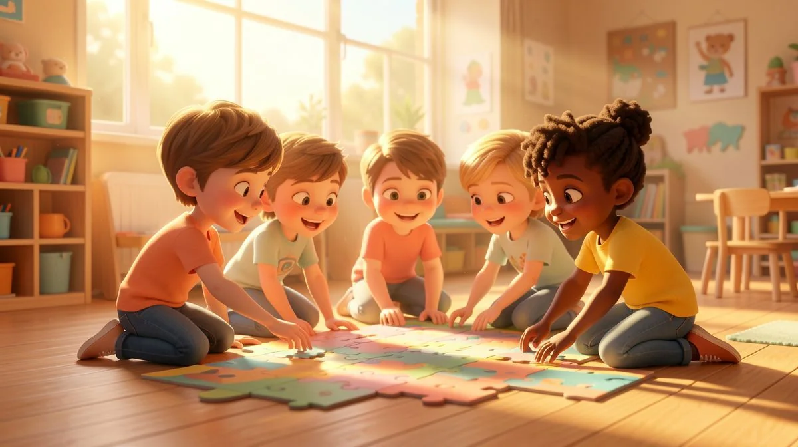

Critical Thinking
📖 12 min
Ultimate Critical Thinking Activities for Kindergarten
Boost logic & problem-solving with fun kindergarten worksheets! Download critical thinking activities now.
February 21, 2026 at 12:03 AM
Read More →